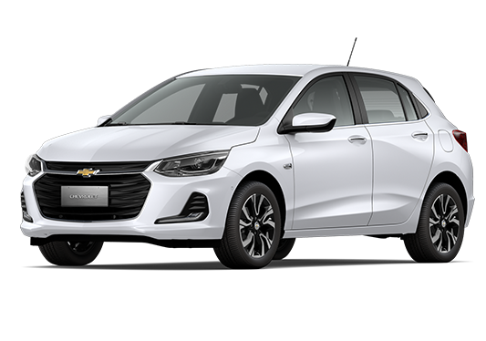

Onix

O Onix é um modelo de carro produzido pela Chevrolet e muito popular no Brasil, especialmente em sua versão hatchback e sedan.
O Onix geralmente é oferecido com motores econômicos e de bom desempenho para um carro de entrada, sendo muito bem aceito por quem busca um carro que combine baixo consumo de combustível e bom desempenho.
Polo

O Volkswagen Polo é um carro compacto da Volkswagen, que tem se destacado no Brasil desde seu lançamento em 2017.
Ele é conhecido pelo bom desempenho, qualidade de construção e um design mais sofisticado em comparação com outros modelos da mesma categoria.
O modelo conta com opções de motores 1.0 e 1.6, sendo eficiente no consumo de combustível e com bom desempenho para um carro compacto.
Strada

A Fiat Strada é uma picape compacta muito popular no Brasil, conhecida pela sua robustez e versatilidade, ideal para quem precisa de um veículo para trabalho e lazer.
Lançada em 1998, a Strada oferece opções de motores flex, geralmente com motorização 1.3 e 1.4, que garantem bom desempenho tanto para uso urbano quanto para viagens e trabalho pesado.